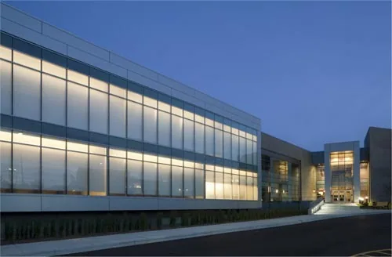

واجهات كرتن وول
أنظمة إطارات وزجاج للواجهات الممتدة والمباني المرتفعة.
نصمّم ونركّب الواجهات الزجاجية في الرياض للمباني التجارية والسكنية. ننسّق مع مهندس المشروع لاختيار نظام الكرتن وول أو الزجاج العنكبوتي أو تكسيات الألمنيوم بما يلائم ارتفاع المبنى وتعرّضه للشمس.

أنظمة إطارات وزجاج للواجهات الممتدة والمباني المرتفعة.
ألواح زجاجية بتثبيت نقطي يبرز شفافية الواجهة.
ألواح خارجية لتشطيب أجزاء الواجهة وربطها بصرياً بالزجاج.
خيارات زجاج تساعد على الحد من الأشعة فوق البنفسجية.
نراجع مخططات المبنى والفتحات المعمارية.
ننسّق تفاصيل النظام والتثبيت مع مهندس المشروع.
نصنّع القطاعات ونجهّز الألواح حسب المقاسات.
يتولى الفريق تركيب الهيكل والزجاج بمعدات مناسبة للواجهة.
شاركنا المقاسات أو فكرة المشروع لنساعدك في اختيار الخدمة والتشطيب.